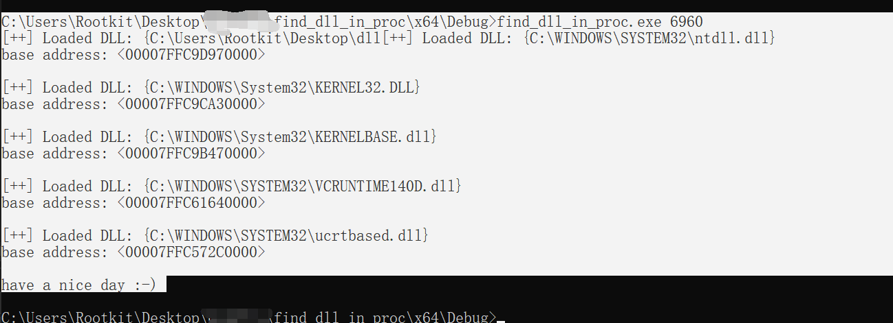

通过LDR结构体去观察已经载入的dll。如果想直到所有的用到的dll可以通过访问程序的导出表，这里的工具是利用LDR观察正在使用的dll。DLL 是在需要时动态加载的，因此有可能某些 DLL 尚未加载。
缺点：无法观察到通过loadlibrary载入的dll文件。
使用方式：
fdip [pid]
#include<stdio.h>
#include<Windows.h>
#include<stdlib.h>
#include<winternl.h>
#include "struct.h"
typedef LONG(NTAPI* NtQueryInformationProcessPtr)(
HANDLE ProcessHandle,
DWORD ProcessInformationClass,
PVOID ProcessInformation,
ULONG ProcessInformationLength,
PULONG ReturnLength
);
int main(int argc, char* argv[])
{
// 没有获取到参数的情况
if (argc <= 1)
{
printf("Usage: %s <filename>\n", argv[0]);
printf("Example: fdip32 [proc Id]\n");
return 1;
}
DWORD ProcID = atoi(argv[1]);
//DWORD ProcID = 32956;
HANDLE hProcess = OpenProcess(PROCESS_ALL_ACCESS, FALSE, ProcID);
HMODULE hNtdll = LoadLibraryA("ntdll.dll");
if (hNtdll == NULL)
{
printf("无法加载 ntdll.dll 库\n");
return 1;
}
NtQueryInformationProcessPtr NtQueryInformationProcess = (NtQueryInformationProcessPtr)GetProcAddress(hNtdll, "NtQueryInformationProcess");
//find base addr by peb
PROCESS_BASIC_INFORMATION pbi;
ULONG ReturnLength;
NTSTATUS status = NtQueryInformationProcess(hProcess, 0, &pbi, sizeof(pbi), &ReturnLength);
if (status != 0)
{
printf("NtQueryInformationProcess 失败，错误码 %lu\n", status);
return 1;
}
PEB peb;
ReadProcessMemory(hProcess, pbi.PebBaseAddress, &peb, sizeof(peb), NULL);
PPEB_LDR_DATA ldrr = peb.Ldr;
PLIST_ENTRY pListEntry = ldrr->InMemoryOrderModuleList.Flink;
if (!strcmp(argv[1], "-a") || !strcmp(argv[1], "--a"))
{
while (pListEntry != &ldrr->InMemoryOrderModuleList)
{
PLDR_DATA_TABLE_ENTRY pEntry = CONTAINING_RECORD(pListEntry, LDR_DATA_TABLE_ENTRY, InMemoryOrderLinks);
printf("[+^+] Loaded DLL: LLLLL\tbase address: <%p>\n", pEntry->FullDllName.Buffer, pEntry->DllBase);
pListEntry = pListEntry->Flink;
}
}
else
{
while (pListEntry != &ldrr->InMemoryOrderModuleList)
{
PLDR_DATA_TABLE_ENTRY pEntry = CONTAINING_RECORD(pListEntry, LDR_DATA_TABLE_ENTRY, InMemoryOrderLinks);
printf("[++] Loaded DLL: LLLLL\nbase address: <%p>\n\n", pEntry->FullDllName.Buffer, pEntry->DllBase);
pListEntry = pListEntry->Flink;
}
}
printf("have a nice day :-)\n");
CloseHandle(hProcess);
return 0;
}
上述代码的
printf("[++] Loaded DLL: LLLLL\nbase address: <%p>\n\n", pEntry->FullDllName.Buffer, pEntry->DllBase);
里面的LLLLL应该是{%ws}，但是md识别有问题。
思路：通过PEB定位到LDR，然后通过利用InMemoryOrderModuleList访问到LDR_DATA_TABLE_ENTRY结构体，然后通过里面的DllBase FullDllName来访问基址和模块名称。
typedef struct _LDR_DATA_TABLE_ENTRY {
PVOID Reserved1[2];
LIST_ENTRY InMemoryOrderLinks;
PVOID Reserved2[2];
PVOID DllBase;
PVOID Reserved3[2];
UNICODE_STRING FullDllName;
BYTE Reserved4[8];
PVOID Reserved5[3];
#pragma warning(push)
#pragma warning(disable: 4201) // we'll always use the Microsoft compiler
union {
ULONG CheckSum;
PVOID Reserved6;
} DUMMYUNIONNAME;
#pragma warning(pop)
ULONG TimeDateStamp;
} LDR_DATA_TABLE_ENTRY, *PLDR_DATA_TABLE_ENTRY;
使用效果
